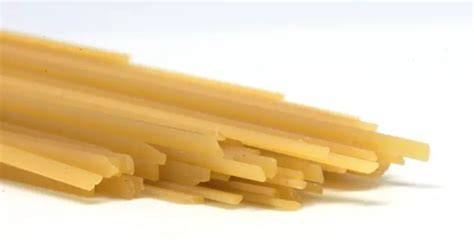

"A ribbon noodle, narrower than tagliatelle, with a cross-section like flattened spaghetti, similar to trenette and wider than linguine" (Wikipedia Source)
 "Bigoli is an extruded pasta in the form of a long and thick strand. Initially bigoli were made with buckwheat flour,
but are now more commonly made with whole-wheat flour,
and sometimes include duck eggs."
"Fettuccine is a type of pasta popular in Roman cuisine.
It is descended from the extremely thin capelli d'angelo of the Renaissance,
but is a flat, thick pasta traditionally made with egg and flour."
(Wikipedia Source)

Lasagna, also known by the plural form lasagne, is a type of pasta made in very wide, flat sheets.
In Italian cuisine it is used to make the dish lasagna by stacking layers of pasta,
alternating with fillings such as ragù (ground meats and tomato sauce),
béchamel sauce, vegetables, cheeses (which may include ricotta, mozzarella, and Parmesan), and seasonings and spices.
Spaghetti is a long, thin, solid, cylindrical pasta. It is a staple food of traditional Italian cuisine.
Like other pasta, spaghetti is made of milled wheat, water, and sometimes enriched with vitamins and minerals.